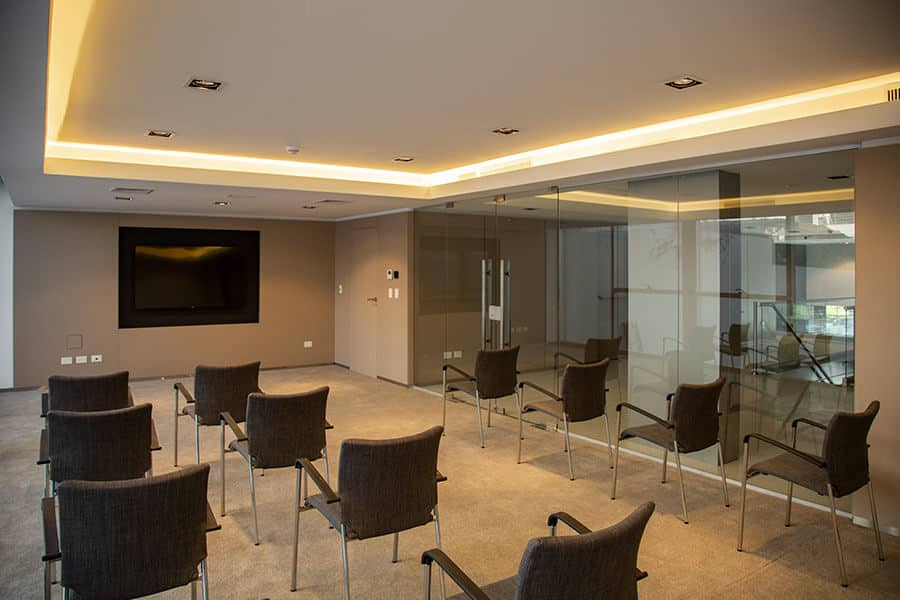
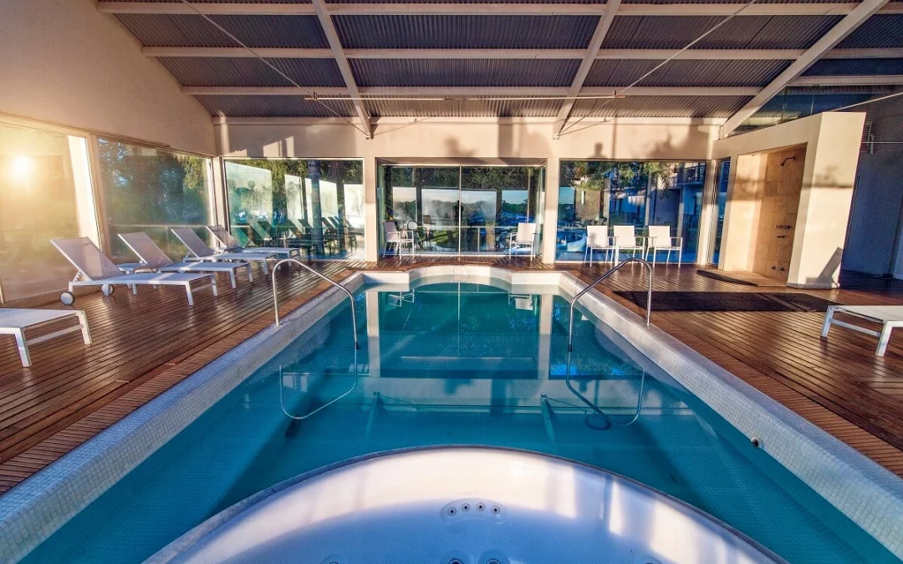

La mejor ubicación en Córdoba Capital
Con una inigualable ubicación en el centro de la ciudad, es el primer hotel de Córdoba ubicado en la Plaza Colón – Av Colón Alberdi 951, Córdoba – cerca de restaurantes, teatros y otros puntos de interés.
Disfruta de todos nuestros SERVICIOS
Sus amplias y luminosas habitaciones y sus servicios adicionales como gimnasio, sala de reuniones y sky bar lo convierten en la mejor opción de alojamiento en la ciudad.
Desde nuestro hotel en el centro de Córdoba podrás disfrutar de magníficas vistas de la ciudad desde cada habitación y desde su increíble terraza.
Disfruta del confort y las experiencias únicas que ofrecemos

- Eventos y reuniones exitosas
- En San José encontrarás la sala de reuniones perfecta para hacer tu evento. La ubicación estratégica y los distintos espacios funcionales ofrecen la mejor opción para eventos sociales y corporativos en Córdoba. Capacidad de 20 a 25 personas.

- Piscina interior
- Wi-fi gratuito
- Disfruta de una conexión segura y de alta velocidad en todo el Hotel.
- City tour, visitas guiadas y actividades en Córdoba
- Recorre en un antiguo colectivo inglés los puntos más importantes de la ciudad: el Centro Histórico Fundacional compuesto por la Plaza San Martín, el Cabildo y la Catedral; el Centro Cívico, donde se destacan la Municipalidad, el Palacio de Justicia, la Plaza Italia, el arroyo La Cañada, la Plaza de la Intendencia, etc.Pasará por el teatro Libertador General San Martín e ingresará al barrio estudiantil de Nueva Córdoba donde visitará la Iglesia de los Capuchinos. Continuará por el Parque Sarmiento, la Casa de Gobierno y la Ciudad Universitaria.Podrá observar el monumento al 'Hombre Urbano', y bordeará la Costanera del Río Suquía arribando al popular Barrio Alberdi. Desde allí la Av. Colón lo llevará hacia el Estadio Olímpico Córdoba, el Complejo Ferial, la Universidad Libre del Medio Ambiente y el Jardín Botánico de la Ciudad.Cruzará el río e ingresará en el elegante Barrio del Cerro de Las Rosas, donde conocerás el monumento a la 'Mujer Urbana', la Av. Rafael Nuñez y el mirador del Parque Autóctono.